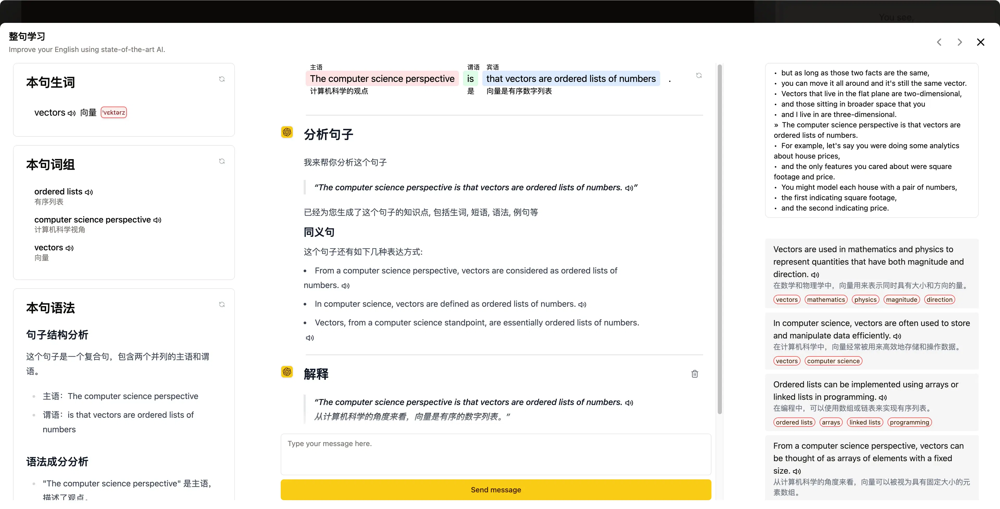

双语字幕
英文、中文、双语或隐藏字幕都可以快速切换，适合泛听和精听之间来回切换。
专为英语学习打造
DashPlayer 帮你围绕字幕控制视频：按句跳转、重复当前句、双语对照、快速查词，并用 AI 生成字幕与学习内容。

Features
英文、中文、双语或隐藏字幕都可以快速切换，适合泛听和精听之间来回切换。
上一句、下一句、重复当前句都围绕字幕粒度设计，减少拖进度条的打断感。
看到生词直接悬停查询，保留上下文，不必离开当前视频学习节奏。
为没有字幕的视频生成字幕，也可以分析句子、短语和语法点。
键盘和蓝牙手柄都能控制播放，适合长时间沉浸式学习。
内置下载、转码、切分等工具，方便把素材整理成自己的学习库。
Workflow
打开本地视频、音频和 SRT 字幕，或先用内置工具下载视频。
按字幕跳转、重复、调速、隐藏译文，把注意力放回声音和语境。
查词、收藏片段、使用 AI 分析，把值得复习的内容留下来。
Download
桌面版支持 macOS 和 Windows。当前网站是静态部署版本，可以放到 GitHub Pages、Vercel、 Netlify 或任意静态服务器。